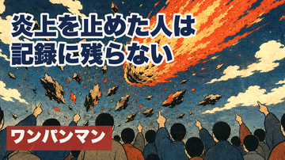
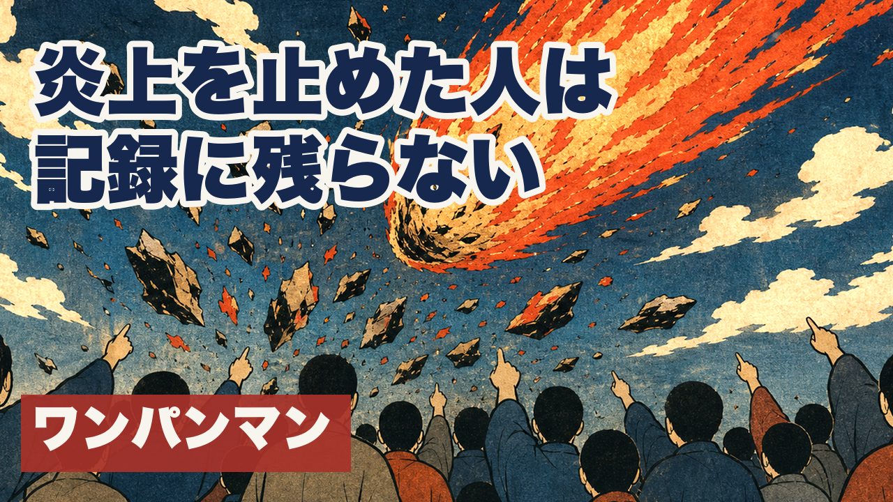
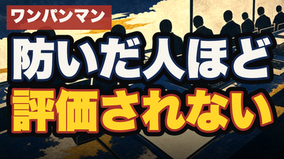
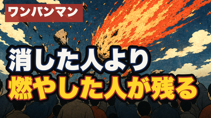

ご指摘：「防いだ人は／記録に残らない」だと何を言っているか分からない。→ 主語を「炎上を止めた人」へ具体化しました。



84点・不合格 「防いだ人ほど／評価されない」＝ご指摘どおり「何を防いだのか」が立たないと採点者も判定（可読性15/25）。

合格圏 「消した人より／燃やした人が残る」＝皮肉は効くが、採用案より主語の具体性が弱い。
| 採点表(2026-07-27改訂)の要件 | 今回 |
|---|---|
| 題字は主語＋述語で「誰の・何の痛みか」が分かる文。体言止めの断片・文脈ゼロの暗号は大幅減点 | 「炎上を止めた人は／記録に残らない」＝主語・対象・述語がそろう |
| 1行9字以内×最大2行・極太ゴシック | 8字／7字・ヒラギノ角ゴW9 |
| 作品名タグ必須（無ければ0点） | 左下に「ワンパンマン」 |
| タイトルを一字一句なぞらない（別表現で補完） | タイトルの抽象的な痛みに、具体的な場面を足している |
| 直近5本と3秒で見分けがつく | 上段左寄せの白題字＋右上から落ちる朱の隕石＋群衆の後ろ姿 |
生成器の1行上限も7字→9字に直しました。旧7字では「主語＋述語で意味が立つ文」が物理的に書けず、体言止めの断片を強制していたためです（＝今回の失敗の構造的な原因）。